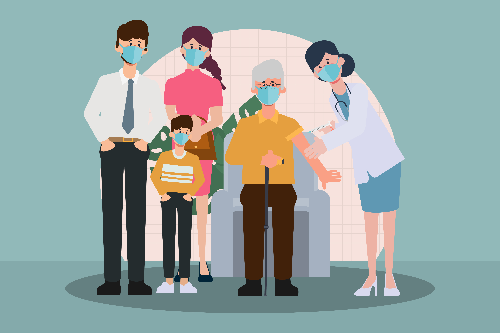
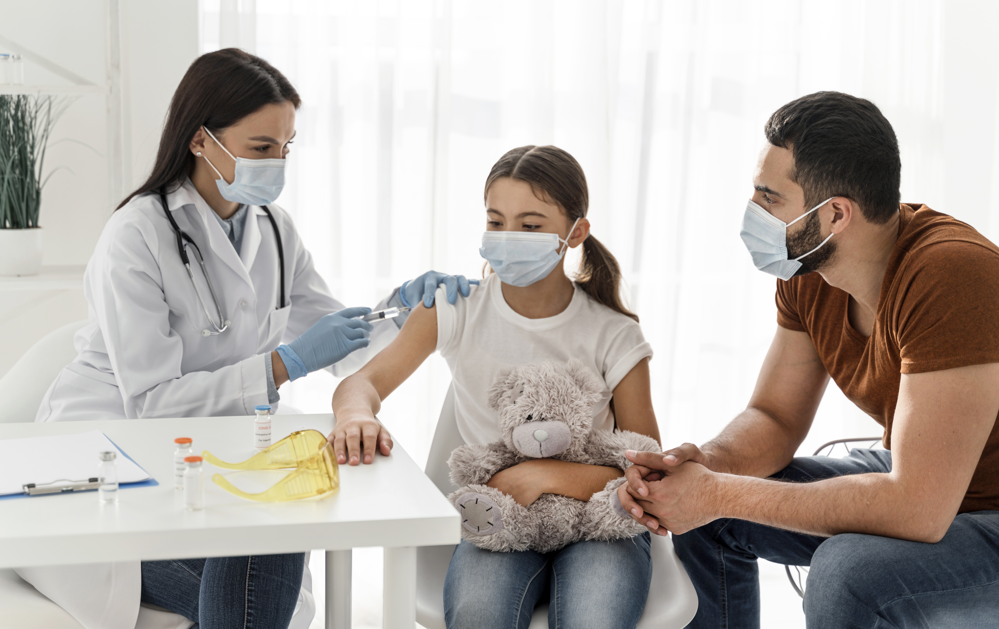

Vaccination is a crucial public health tool that plays a significant role in preventing infectious diseases. It works by stimulating the body's immune response to recognize and fight off specific pathogens, reducing the likelihood of infection.
One of the most compelling reasons to get vaccinated is the concept of herd immunity. When a significant portion of the population is immunized, it creates a protective barrier that reduces the spread of diseases.
"Herd immunity helps protect those who cannot be vaccinated, such as infants or individuals with certain medical conditions."

Throughout history, vaccines have been instrumental in controlling and eradicating deadly diseases. The smallpox vaccine led to the complete eradication of the disease, while vaccines for polio have drastically reduced its incidence globally.
Vaccination is vital for community health. By reducing the incidence of disease, vaccines lower healthcare costs, decrease the burden on healthcare systems, and contribute to a healthier population overall.
Addressing these misconceptions with accurate information is critical to promoting vaccination and protecting public health.
Vaccination is a critical tool for preventing infectious diseases. By promoting accurate information and understanding the benefits of vaccination, we can safeguard public health and well-being.